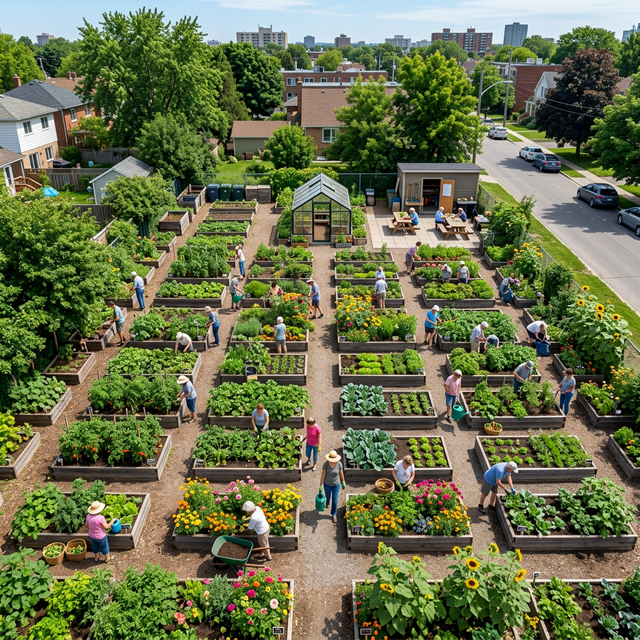

Our Story
GreenHaven Community Garden began in 2018 when a small group of neighbours transformed a neglected car park on Garden Lane into a vibrant green space. What started with just six raised beds has grown into a thriving community hub with over 60 plots, a greenhouse, a composting station, and a dedicated education area.
Today, GreenHaven serves more than 150 active members from all walks of life. We believe that everyone deserves access to fresh, healthy food and a supportive community. Whether you are an experienced gardener or picking up a trowel for the first time, there is a place for you here.
Explore Our Programmes
Our Values
The principles that guide everything we do at GreenHaven.
Sustainability
We practise organic gardening methods, composting, and water conservation to care for our environment for future generations.
Community
We bring people together across ages, backgrounds, and abilities. The garden is a place where friendships grow alongside the flowers.
Education
Through workshops, talks, and hands-on learning, we empower people with the knowledge and skills to grow their own food.
Inclusivity
Everyone is welcome at GreenHaven. We offer accessible raised beds, free memberships for those in need, and multilingual resources.
Meet the Team
The dedicated volunteers who keep GreenHaven blooming.
Anna Chen
Garden Director
Anna founded GreenHaven in 2018 and oversees the garden's operations. She is a qualified horticulturist with a passion for urban green spaces.
Marcus Obi
Workshop Coordinator
Marcus organises all of our workshops and educational events. He specialises in organic growing techniques and loves sharing his knowledge.
Emily Frost
Volunteer Manager
Emily coordinates our wonderful team of volunteers. She ensures everyone feels welcome and has a meaningful role in the garden.
David Park
Youth Programme Lead
David runs our Little Sprouts kids' club and school partnership programmes. He is a former primary school teacher with a green thumb.